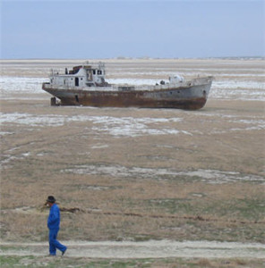

Mares que se encogen, ríos que se desbordan
El planeta está en cambio constante, y gracias a la ‘ayuda’ de la humanidad (y en algunos casos sin ella), experimenta en la actualidad cambios dramáticos. Algunos de ellos los hemos visto al hablar del hielo en el Polo Norte o de los pingüinos en el Polo Sur.
Y aunque los cambios son importantes (como lo muestran las investigaciones científicas), poco efecto han tenido en cambiar nuestro comportamiento colectivo: ¿dejarías de usar auto por el bien del planeta?, ¿evitarías comprar al máximo productos de plástico?, ¿te mudarías a una casa más pequeña para ahorrar agua y energía? ….
Dejemos las preguntas incómodas a un lado, después de todo estoy escribiendo esto en un equipo electrónico con componentes altamente contaminantes, y cada vez que hago compras caseras, obtengo toda una colección nueva de bolsas de plástico.
Así que seguramente seguiremos con nuestro estilo de vida, al menos hasta que no tengamos alternativa.
Mientras llegamos a ese punto, veamos unos de los cambios más dramáticos (para quien pueda visualizarlos, claro) que han ocurrido en las últimas décadas.
Mares que se encogen
Ubicación: Entre Kazajistán, al norte, y Uzbekistán, al sur, en la antigua Unión Soviética en Asia Central.
1960: El cuarto mar interior del mundo. Extensión: 68,000 kilómetros cuadrados.
2004: El vigésimo quinto mar interior del mundo. Extensión de 17,000 kilómetros cuadrados.
{kind=link}
Causa: Los ríos que alimentaban al Mar Aral fueron desviados de su curso por el régimen soviético, con el propósito de irrigar el desierto para regar cultivos en Uzbekistán y Kazajistán.
Ubicación: Entre Israel, Cisjordania y Jordania.
De 1970 al 2006 descendió 22 metros en su nivel, a un ritmo de 1 metro por año. Por este descenso, en la actualidad ha quedado dividido en dos partes.
{kind=link}
Causa: El crecimiento de la población de los países vecinos ha hecho que se desvíe agua de los ríos que alimentan al Mar Muerto. También el crecimiento de las zonas dedicadas a la extracción de la sal (por evaporación) ha contribuido de forma importante.
Ubicación: frontera entre Chad, Níger, Nigeria y Camerún, en África.
1960: El cuarto lago más grande de África. Extensión: 26,000 kilómetros cuadrados.
2006: Extensión: 900 kilómetros cuadrados.
{kind=link}
Causa: Sobre cultivo de las zonas vecinas al lago, crecimiento de la población, y en menor medida, cambio climático.
Ríos que se desbordan
Ubicación: Mali, construida de 1981 a 1987 sobre el curso del río Bafing. Inició sus operaciones hidroeléctricas hasta 2001 (gracias a un préstamo del Banco Mundial).
{kind=link}
Se piensa que ha contribuido al descenso de la agricultura y a la deforestación río abajo de la presa.
La Presa de las Tres Gargantas
Ubicación: China, en el curso del río Yangtsé.
Su construcción comenzó en 1993, y se prevé que sea completamente operacional en el año 2011. Es la central hidroeléctrica más grande del mundo, y su reserva de agua cubrirá un total de 632 kilómetros cuadrados.
{kind=link}
Beneficios: Reducción de contaminantes ambientales por generación de electricidad y reducción de gases invernadero por el aumento de la capacidad de transporte en el río. Control de inundaciones y alivio de sequía. Navegación mejorada en el río. Indirectamente hizo emprender al gobierno chino un fuerte programa de reforestación, y de procesamiento de aguas antes de ser vertidas en la reserva de las Tres Gargantas.
Problemas: Provocará la destrucción del hábitat de las poblaciones de las grullas Siberianas, una especie en peligro de extinción; y también contribuyó a la extinción funcional del delfín de agua dulce Baiji. La disminución del flujo del agua aumenta los problemas de contaminación del Yangtsé, y provocará la pérdida de alrededor de 1300 lugares arqueológicos por inundación, entre otros.
–
Estos son sólo algunos de los ejemplos más espectaculares de cambios ambientales en el mundo, causados en mayor medida por nuestra especie. Para quien quiera conocer más sitios que han cambiado drásticamente en las últimas décadas, visiten el Atlas de Nuestro Cambiante Ambiente, del Programa de las Naciones Unidas para el Medio Ambiente (UNEP). Ambos sitios, en inglés.
Metadatos y acciones
 Temas: clima, geografia, tierra ⋅
Para guardar: Enlace permanente a esta anotación.
Temas: clima, geografia, tierra ⋅
Para guardar: Enlace permanente a esta anotación.
 Print This Post
Print This Post
Comentarios
Los comentarios están cerrados.
Categorías
Últimas 4 anotaciones
Últimas anotaciones en cada categoría

Divulgación
El dinero no fomenta la creatividad: Daniel Pink en TEDGlobal 2009

Inspiración
Los 30 no son los nuevos 20

Noticias
Ver tu mente en tiempo real: Christopher deCharms en TED 2008
![Música en la era digital [Animación]](../../../wp-content/themes/tma/images/featured/animation_04_2009_featured.jpg)
Ocio
Música en la era digital [Animación]
julio 28, 2008, 6:54 am
Información Bitacoras.com…
Si lo deseas, puedes hacer click para valorar este post en Bitacoras.com. Gracias….
octubre 7, 2009, 9:11 am
muy bueno. soy estudiante de prof de geografia y imagen muy actual del lago chad.gracias
enero 1, 2010, 12:32 am
es triste como la humanidad esta destruyendo su habitad y lo peor es que en vez de colaborar con la construcciòn colaboramos con la destrucciòn………… de verdad que es triste…….. pensemos y hagamos un cambio en nuestras vidas……… Cristo nos ama no dejes que venga y no estes preparado
febrero 14, 2011, 2:01 pm
LA VERDAD ES MUY TRISTE VER COMO UN MUNDO SE DESTRUYE CADA MINUTO, POR SUS PROPIOS HABITANTES, HAY QUE TRATAR DE EVITAR ESTA TRISTE PERO CRUEL VERDAD.